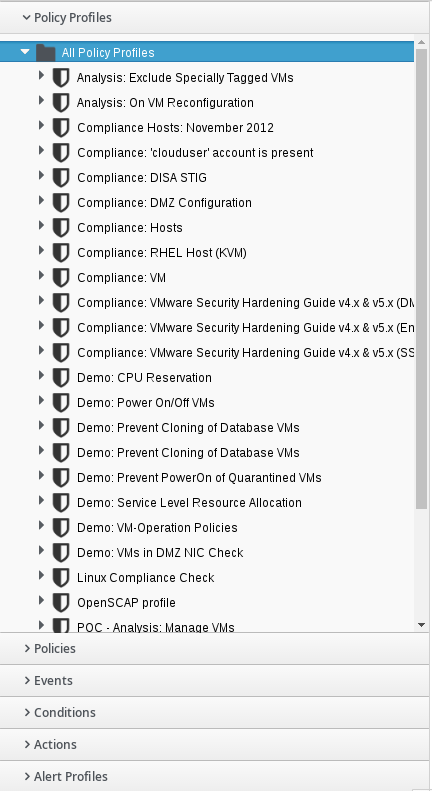
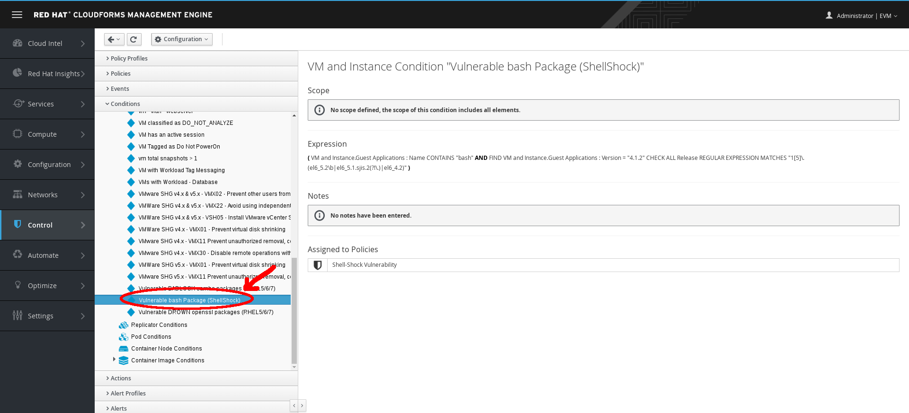

Exercise 1.14 - Examine Policies
Exercise Description
Policy profiles are groups of policies that you can apply to entities within CloudForms. Two common types of policies are Compliance policies, which check for a specific state in a host or VM, and Control policies, which control a host or VM, depending on certain criteria.
In this exercise, you will learn how to work with policies, events, conditions, actions, alerts, and profiles.
- An Event is a trigger to check a condition.
- A Condition is a test triggered by an event.
- An Action is an execution that occurs if a condition is met.
Section 1: Examine Policies
Step 1. Select Control → Explorer.

Control Explorer
Step 2. Select the Policy Profiles accordion.

Policy Profile Accordion
Step 3. Select All Policy Profiles → Linux Compliance Check → VM and Instance Compliance: Shell-Shock Vulnerability → Vulnerable bash Package (ShellShock).

Shell-Shock Vulnerability
Step 4. On the right, observe the Expression used for this policy.
Section 2: Explore Events
Step 1. Select the Events accordion.

Events Accordion
Step 2. Select All Events → Container Image Discovered.

Container Image Discovered
Step 3. Observe that the imported policy shows up as assigned.
Section 3. Explore Conditions
Step 1. Select the Conditions accordion.

Conditions Accordion
Step 2. Select All Conditions → All VM and Instance Conditions → Vulnerable bash Package (ShellShock)

Conditions ShellShock
Step 3. Examine the Expression.
Section 4: Explore Actions
Step 1. Select the Actions accordion.

Actions Accordion
Step 2. Select All Actions → Send Email to Security Team.

Send Email
Step 3. Observe what this action does and the policies to which it is assigned.
Step 4. Examine other actions and results.
Section 5. Explore Alerts
Step 1. Select the Alerts accordion.

Alerts Accordion
Step 2. Select All Alerts → VM Memory was decreased.

VM Memory Alerts
Step 3. Review the Hardware Reconfigured Parameters section to see what this alert monitors.
Section 6. Explore Alert Profiles
Step 1. Select the Alert Profiles accordion.

Alerts Profile Accordion
Step 2. Select All Alert Profiles → VM and Instance Alert Profiles.

All VM and Instance Alert Profiles
Step 3. Add an alert profile:
- Click (Configuration) → Add a New VM and Instance Alert Profile.
- Enter VM Memory Decrease for Description.
- In Alert Selection, select VM Memory was decreased and click .
- Click Add.

Add Alert Profile
Step 4. Assign your alert profile:
- Select the new alert profile you just created.
- Click (Configuration) → Edit assignments for this Alert Profile.
- Choose Selected Cluster/Deployment Roles for Assign To.
- Check the Raleigh box.
- Click Save.

Assign Alert Profile
You have now assigned this alert to any VM in the Raleigh cluster.